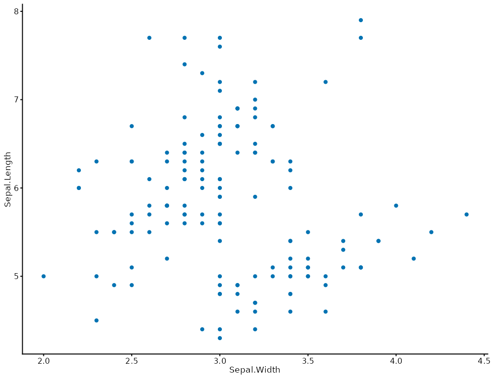

Applies plotit's default theme and overrides individual elements via ....
Call style(p) without arguments to apply the default theme, or pass
theme-element overrides like style(p, plot.title = element_text(face="bold")).
Use base_theme to switch to an entirely different base theme (e.g.,
style(p, base_theme = ggplot2::theme_bw())).
Arguments
- plot
A plotit object.
- ...
Theme element overrides, passed to
ggplot2::theme().- base_size
Base font size in pts (default 10).
- base_family
Base font family (default
""= system sans-serif).- base_theme
A complete ggplot2 theme object to use instead of the default (e.g.,
ggplot2::theme_bw()).NULL= use plotit default.
Examples
plotit(iris, encode(x = Sepal.Width, y = Sepal.Length)) |>
mark_point() |>
style()
